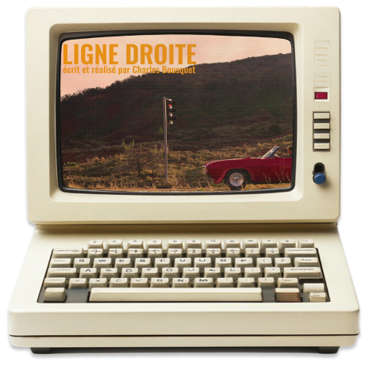
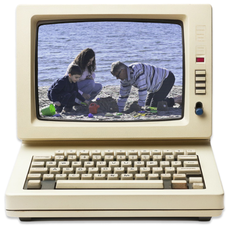

Mes projets
et creations numeriquesbienvenue dans mon monde !
audiovisuel

“Ligne Droite”
Ligne Droite
à l’occasion du Nikon Project

Charles Bousquet - 2024
Un homme au volant d’une voiture américaine. Une longue ligne droite dans un paysage de western. Un feu rouge comme sorti de nulle part.
Ligne Droite
à l’occasion du Nikon Project

“La 7ème minute”
La 7ème minute
réalisé pour le film de bac
Pauline Yvelin - Lenny Ochudlo
2024
Que reste-t-il de nos vies, quand on s'en va ? Quelles images en garde notre cerveau, auquel il reste environ 7 minutes de pensée, une fois que le coeur a cessé de battre ?
La 7ème minute
réalisé pour le film de bac